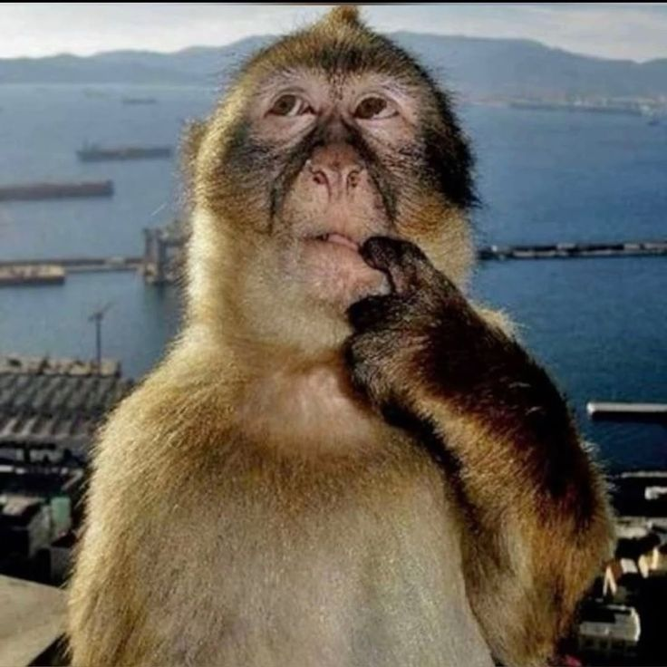
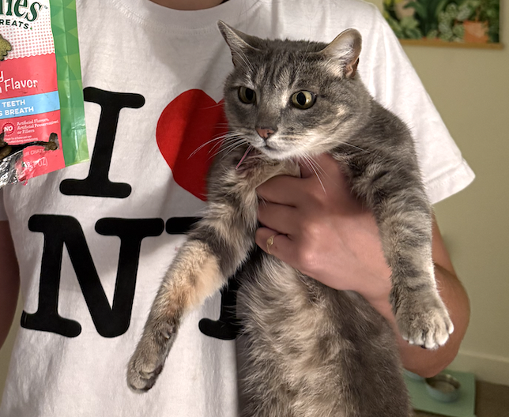
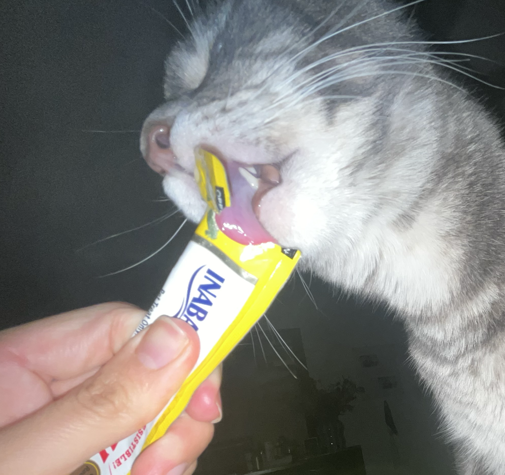

caroline: creative director, dragged a three year old into my enclosure, died, interview communication/coordination, question formation&asking, secondary research, interview, coding she/they, wrote sections: overview, typical tasks, job outlook, interview summary

veronica: interview notetaking and question development, coding mama, wrote sections: job market outlook, interview transcript notes, interview summary, labor trends

maia: interview communication/coordination/questions creation&facilitation, created website layout, coding boss, wrote/worked on sections: professional context and labor trends

sarah: interview notetaking and question development, had 7 abortions, coding mama, wrote sections: typical tasks, training agenda, and annotated bib sections

nala: emotional support

sparky: emotional terror
♦♦♦